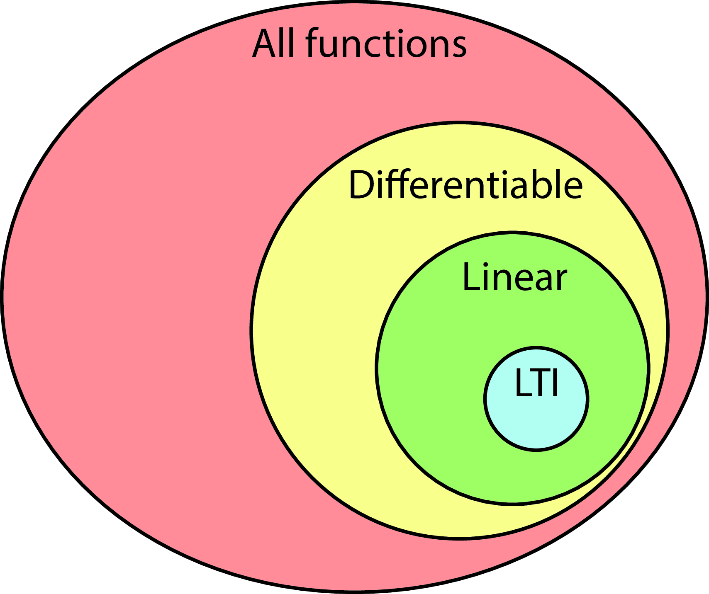
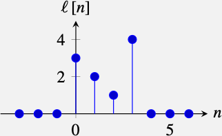
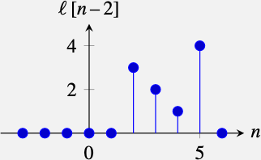
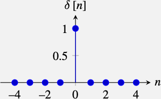
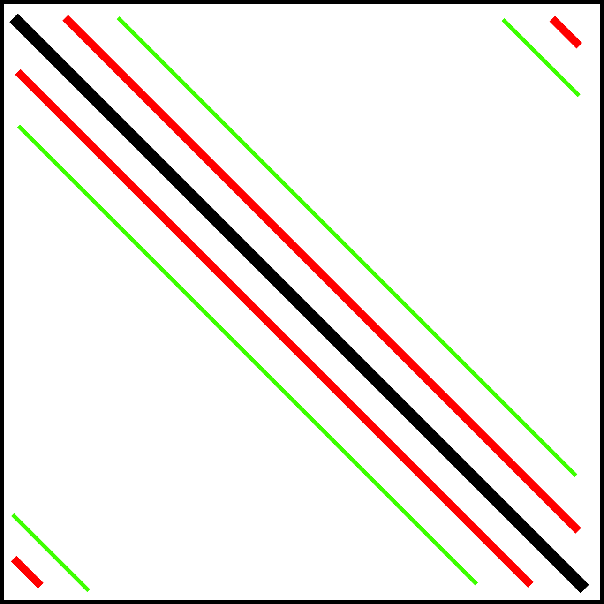

Lviv University
Important
Human visual system is complex.
Tip
We have a fairly good idea of what happens at the initial stages of visual processing.
Note
We will describe some mathematically simple processing that will help us to parse an image into useful tokens, or low-level features that will be useful later to construct visual interpretations.
Processing features
Linear filters
The simplest mathematical processing we can think of.
Signal
A signal is a measurement of some physical quantity (light, sound, height, temperature, etc.) as a function of another independent quantity (time, space, wavelength, etc.).
System
A system is a process/function that transforms a signal into another.
Note
Sampling is the process of transforming a continuous signal into a discrete one.
Signal representation
If we consider the light that reaches one camera photo sensor, we could write it as a one dimensional function of time, \(\ell(t)\), where \(\ell(t)\) denotes the incident \(\ell\)ight at time \(t\), and \(t\) is a continuous variable that can take on any real value.
The signal \(\ell(t)\) is then sampled in time (as is done in a video) by the camera where the values are only captured at discrete times (e.g., 30 times per second). In that case, the signal \(\ell\) will be defined only on discrete time instants and we will write the sequence of measured values as: \(\ell\left[ n \right]\), where \(n\) can only take on integer values.
Discrete-continuous Relationship
The relationship between the discrete and the continuous signals is given by the sampling equation: \[ \ell\left[n\right] = \ell\left(n~\Delta T \right) \] where \(\Delta T\)is the sampling period.
For instance, \(\Delta T = 1/30\) s in the case of sampling the signal 30 times per second.
Figure 1: Fig (a) A continuous signal, and (b) a discrete signal obtained by sampling the continuous signal at the times \(t=n\).
Signal values
The signal in Figure 1 (b) is a function that takes on the values \(\ell\left[0\right] = 3\), \(\ell\left[1\right] = 2\), \(\ell\left[2\right] = 1\) and \(\ell\left[3\right] = 4\) and all other values are zero, \(\ell\left[n\right] = 0\). In most of the book we will work with discrete signals.
Vector notation
In many cases it will be convenient to write discrete signals as vectors. Using vector notation we will write the previous signal, in the interval \(n \in \left[0,6 \right],\) as a column vector \(\boldsymbol\ell= \left[3, 2, 1, 4, 0, 0, 0\right]^T\), where \(T\) denotes transpose.
Image
An image is a two dimensional array of values: \[ \boldsymbol\ell\in \mathbb{R}^{M \times N}, \] where \(N\) is the image width and \(M\) is the image height.
Example
A grayscale image is then just an array of numbers such as the following (in this example, intensity values are scaled between 0 and 256):
\[\begin{array}{cc} \boldsymbol\ell= & \left[ \begin{smallmatrix} 160 & 175 & 171 & 168 & 168 & 172 & 164 & 158 & 167 & 173 & 167 & 163 & 162 & 164 & 160 & 159 & 163 & 162\\ 149 & 164 & 172 & 175 & 178 & 179 & 176 & 118 & 97 & 168 & 175 & 171 & 169 & 175 & 176 & 177 & 165 & 152\\ 161 & 166 & 182 & 171 & 170 & 177 & 175 & 116 & 109 & 169 & 177 & 173 & 168 & 175 & 175 & 159 & 153 & 123\\ 171 & 174 & 177 & 175 & 167 & 161 & 157 & 138 & 103 & 112 & 157 & 164 & 159 & 160 & 165 & 169 & 148 & 144\\ 163 & 163 & 162 & 165 & 167 & 164 & 178 & 167 & 77 & 55 & 134 & 170 & 167 & 162 & 164 & 175 & 168 & 160\\ 173 & 164 & 158 & 165 & 180 & 180 & 150 & 89 & 61 & 34 & 137 & 186 & 186 & 182 & 175 & 165 & 160 & 164\\ 152 & 155 & 146 & 147 & 169 & 180 & 163 & 51 & 24 & 32 & 119 & 163 & 175 & 182 & 181 & 162 & 148 & 153\\ 134 & 135 & 147 & 149 & 150 & 147 & 148 & 62 & 36 & 46 & 114 & 157 & 163 & 167 & 169 & 163 & 146 & 147\\ 135 & 132 & 131 & 125 & 115 & 129 & 132 & 74 & 54 & 41 & 104 & 156 & 152 & 156 & 164 & 156 & 141 & 144\\ 151 & 155 & 151 & 145 & 144 & 149 & 143 & 71 & 31 & 29 & 129 & 164 & 157 & 155 & 159 & 158 & 156 & 148\\ 172 & 174 & 178 & 177 & 177 & 181 & 174 & 54 & 21 & 29 & 136 & 190 & 180 & 179 & 176 & 184 & 187 & 182\\ 177 & 178 & 176 & 173 & 174 & 180 & 150 & 27 & 101 & 94 & 74 & 189 & 188 & 186 & 183 & 186 & 188 & 187\\ 160 & 160 & 163 & 163 & 161 & 167 & 100 & 45 & 169 & 166 & 59 & 136 & 184 & 176 & 175 & 177 & 185 & 186\\ 147 & 150 & 153 & 155 & 160 & 155 & 56 & 111 & 182 & 180 & 104 & 84 & 168 & 172 & 171 & 164 & 168 & 167\\ 184 & 182 & 178 & 175 & 179 & 133 & 86 & 191 & 201 & 204 & 191 & 79 & 172 & 220 & 217 & 205 & 209 & 200\\ 184 & 187 & 192 & 182 & 124 & 32 & 109 & 168 & 171 & 167 & 163 & 51 & 105 & 203 & 209 & 203 & 210 & 205\\ 191 & 198 & 203 & 197 & 175 & 149 & 169 & 189 & 190 & 173 & 160 & 145 & 156 & 202 & 199 & 201 & 205 & 202\\ 153 & 149 & 153 & 155 & 173 & 182 & 179 & 177 & 182 & 177 & 182 & 185 & 179 & 177 & 167 & 176 & 182 & 180 \end{smallmatrix}\right] \end{array}\]
Grayscale image showing a person walking in the street. This tiny image has only \(18\times18\) pixels.
Pixel location
When we want to make explicit the location of a pixel we will write \(\ell\left[n, m \right]\), where \(n \in \left[0,N-1 \right]\) and \(m \in \left[0,M-1 \right]\) are the indices for the horizontal and vertical dimensions, respectively.
each value in the array indicates the intensity of the image in that location.
for color images we will have three channels, one for each color.
Approximation
Working on the continuous domain simplifies the derivation of analytical solutions. In those cases we will write images as \[ \ell(x,y) \] and video sequences as \[ \ell(x,y,t) \].
Signal length
Infinite length signals are signals that extend over the entire support \(\ell\left[n \right]\) for \(n \in (-\infty, \infty)\).
Finite length signals have non-zero values on a compact time interval and they are zero outside, i.e. \(\ell\left[n \right] = 0\) for \(n \notin S\) where \(S\) is a finite length interval.
Periodicity
A signal \(\ell\left[n \right]\) is periodic if there is a value \(N\) such that \(\ell\left[n \right] = \ell\left[n + k N\right]\) for all \(n\) and \(k\). A periodic signal is an infinite length signal.
Mean value
Mean value of a signal often called the DC value.
In the case of an image, the DC component is the average intensity of the image.
The DC value is computed as \[ \mu = \begin{cases} \frac{1}{N} \sum_{n=0}^{N-1} \ell\left[n\right], \, \text{finite case} \\ \lim_{N \xrightarrow{} \infty} \frac{1}{2N+1} \sum_{n=-N}^{N} \ell\left[n\right], \, \text{infinite case} \end{cases} \]
Energy
The energy of a signal is defined as the sum of squared magnitude values: \[ E = \sum_{n = -\infty}^{\infty} \left| \ell\left[n\right] \right| ^2 \]
Note
Signal are further classified as finite energy and infinite energy signals
Comparison
If we want to compare two signals, we can use the squared Euclidean distance (squared \(L_2\) norm) between them: \[ D^2 = \frac{1}{N} \sum_{n=0}^{N-1} \left| \ell_1 \left[n\right] - \ell_2 \left[n\right] \right| ^2 \]
Warning
However, the euclidean distance (\(L_2\)) is a poor metric when we are interested in comparing the content of the two images and the building better metrics is an important area of research. Sometimes, the metric is \(L_2\) but in a different representation space than pixel values.
Continuous signal properties
All the equations are analogous by replacing the sums with integrals.
For instance, in the case of the energy of a continuous signal, we can write
\[ E = \int_{-\infty}^{\infty} \left| \ell\left( t \right) \right|^2 dt, \] which assumes that the integral is finite.
Most natural signals will have infinite energy.
Systems flow
Figure 2: System processing one signal.
What can this do?
All kinds of things:
Linear systems
A function \(f\) is linear is it satisfies the following two properties:
\[\begin{aligned} & 1. \; f\left( \boldsymbol\ell_1+\boldsymbol\ell_2 \right) = f(\boldsymbol\ell_1)+ f(\boldsymbol\ell_2) \\ \nonumber & 2. \; f(a\boldsymbol\ell) = af(\boldsymbol\ell) ~~\text{for any scalar} ~ a \end{aligned}\]
Which operations are linear?
Which ones of the image transformations can be written as linear systems?
Linear system: inputs/outputs
Most of the times we will work with input and output pairs with the same length \(M=N\).
Linear system: definition
A linear system, in its most general form, can be written as follows:
\[\ell_{\texttt{out}}\left[n \right] = \sum_{k=0}^{N-1} h \left[n,k\right] \ell_{\texttt{in}}\left[k \right] ~~~ for ~~~ n \in \left[0, M-1 \right] \qquad(1)\]
Linear system: properties
Matrix form
\[\begin{bmatrix}\ell_{\texttt{out}}\left[ 0 \right] \\ \ell_{\texttt{out}}\left[ 1 \right] \\ \vdots \\ \ell_{\texttt{out}}\left[ n \right] \\ \vdots \\ \ell_{\texttt{out}}\left[ M-1 \right] \end{bmatrix} = \begin{bmatrix} h\left[0,0\right] ~&~ h\left[0,1\right] ~&~ ... ~&~ h\left[0,N-1\right] \\ h\left[1,0\right] ~&~ h\left[1,1\right] ~&~ ... ~&~ h\left[1,N-1\right] \\ \vdots ~&~ \vdots ~&~ \vdots ~&~ \vdots \\ \vdots ~&~ \vdots ~&~ h \left[n,k\right] ~&~ \vdots \\ \vdots ~&~ \vdots ~&~ \vdots ~&~ \vdots \\ h\left[M-1,0\right] ~&~ h\left[M-1,1\right] ~&~ ... ~&~ h\left[M-1,N-1\right] \end{bmatrix} ~ \begin{bmatrix} \ell_{\texttt{in}}\left[0\right] \\ \ell_{\texttt{in}}\left[1\right] \\ \vdots \\ \ell_{\texttt{in}}\left[k\right] \\ \vdots \\ \ell_{\texttt{in}}\left[N-1\right] \end{bmatrix}\]
Short form
\[ \boldsymbol\ell_{\texttt{out}}= \mathbf{H} \boldsymbol\ell_{\texttt{in}}. \]
The matrix \(\mathbf{H}\) has size \(M \times N\).
Linear function as a neural network
A linear function can also be drawn as a fully connected layer in a neural network, with weights \(\mathbf{W} = \mathbf{H}\), where the output unit \(i\), \(\ell_{\texttt{out}}\left[i \right]\), is a linear combination of the input signal \(\boldsymbol\ell_{\texttt{in}}\) with weights given by the row vectors of \(\mathbf{H}\). Graphically it looks like this:
2D case
In two dimensions the equations are analogous. Each pixel of the output image, \(\ell_{\texttt{out}}\left[n,m\right]\), is computed as a linear combination of pixels of the input image, \(\ell_{\texttt{in}}\left[n, m\right]\):
\[ \ell_{\texttt{out}}\left[n,m \right] = \sum_{k=0}^{M-1} \sum_{l=0}^{N-1} h \left[n,m,k,l \right] \ell_{\texttt{in}}\left[k,l \right] \qquad(2)\]
By writing the images as column vectors, concatenating all the image columns into a long vector, we can also write the previous equation using matrices and vectors: \(\boldsymbol\ell_{\texttt{out}}= \mathbf{H} \boldsymbol\ell_{\texttt{in}}\).
Linear translation invariant (LTI) systems

Motivation
We don’t know where within the image we expect to find any given item, so we often want to process the image in a spatially invariant manner, the same processing algorithm at every pixel.
Example
An example of a translation invariant system is a function that takes as input an image and computes at each location a local average value of the pixels around in a window of \(5 \times 5\) pixels:
\[\ell_{\texttt{out}}\left[n,m \right] = \frac{1}{25} \sum_{k=-2}^{2} \sum_{l=-2}^{2} \ell_{\texttt{in}}\left[n+k,m+l \right]\]
Definition
A system is an LTI system if it is linear and when we translate the input signal by \(n_0, m_0\), then output is also translated by \(n_0, m_0\): \[ \ell_{\texttt{out}}\left[ n - n_0, m-m_0 \right] = f \left( \ell_{\texttt{in}}\left[ n-n_0, m-m_0 \right] \right) \] for any \(n_0,m_0\). This property is called equivariant with respect to translation.
Definition
The convolution, denoted \(\circ\), between a signal \(\ell_{\texttt{in}}\left[n \right]\) and the convolutional kernel \(h\left[n \right]\) is defined as follows: \[ \ell_{\texttt{out}}\left[n\right] = h \left[n\right] \circ \ell_{\texttt{in}}\left[n\right] = \sum_{k=-\infty}^{\infty} h \left[n-k \right] \ell_{\texttt{in}}\left[k \right] \qquad(3)\]
If the signal \(\ell_{\texttt{in}}\left[n \right]\) has a finite length, \(N\), then the sum is only done in the interval \(k \in \left[0,N-1\right]\).
Weight
The convolution computes the output values as a linear weighted sum. The weight between the input sample \(\ell_{\texttt{in}}\left[k \right]\) and the output sample \(\ell_{\texttt{out}}\left[n\right]\) is a function \(h\left[n, k \right]\) that depends only on their relative position \(n-k\). Therefore, \(h\left[n, k \right]=h\left[n-k \right]\).
Correlation
The convolution is related to the correlation operator. In the correlation, the weights are defined as \(h\left[n, k \right]=h\left[k-n \right]\). The convolution and the correlation use the same kernel but mirrored around the origin. The correlation is also translation invariant as we will discuss at the end of the chapter.
Commutativity
One important property of the convolution is that it is commutative: \[ h\left[n\right] \circ \ell\left[n\right] = \ell\left[n\right] \circ h\left[n\right]. \]
This property is easy to prove by changing the variables, \(k = n - k'\), so that:
\[h \left[n\right] \circ \ell_{\texttt{in}}\left[n\right] =\sum_{k=-\infty}^{\infty} h \left[n-k \right] \ell_{\texttt{in}}\left[k \right] = \sum_{k'=-\infty}^{\infty} h \left[k' \right] \ell_{\texttt{in}}\left[n-k' \right] = \ell_{\texttt{in}}\left[n\right] \circ h \left[n\right]\]
Textual description
For instance, if the convolutional kernel has three non-zero values: \[h\left[-1 \right] =1, ~ h\left[0 \right] = 2, ~ h\left[1 \right] = 3, \] then the output value at location \(n\) is \[\ell_{\texttt{out}}\left[n\right] = 3 \ell_{\texttt{in}}\left[n-1\right]+2 \ell_{\texttt{in}}\left[n\right] + 1 \ell_{\texttt{in}}\left[n+1\right].\]
Matrix form
If the convolutional kernel has only three non-zero values, then:
\[\begin{bmatrix} \ell_{\texttt{out}}\left[ 0 \right] \\ \ell_{\texttt{out}}\left[ 1 \right] \\ \ell_{\texttt{out}}\left[ 2 \right] \\ \vdots \\ \ell_{\texttt{out}}\left[ N-1 \right] \end{bmatrix} = \begin{bmatrix} h\left[0\right] ~&~ h\left[-1\right] ~&~ 0 ~&~ ... ~&~ 0 \\ h\left[1\right] ~&~ h\left[0\right] ~&~ h\left[-1\right] ~&~... ~&~ 0 \\ 0 ~&~ h\left[1\right] ~&~ h\left[0\right] ~&~... ~&~ 0 \\ \vdots ~&~ \vdots ~&~ \vdots ~&~ \vdots \\ 0 ~&~ 0 ~&~ 0 ~&~... ~&~ h\left[0\right] \end{bmatrix} ~ \begin{bmatrix} \ell_{\texttt{in}}\left[0\right] \\ \ell_{\texttt{in}}\left[1\right] \\ \ell_{\texttt{in}}\left[2\right] \\ \vdots \\ \ell_{\texttt{in}}\left[N-1\right] \end{bmatrix}\]
Neural network representation
2D case
\[ \ell_{\texttt{out}}\left[n,m\right] = h \left[n,m\right] \circ \ell_{\texttt{in}}\left[n,m\right] = \sum_{k,l}h \left[n-k,m-l \right] \ell_{\texttt{in}}\left[k,l \right] \qquad(4)\]
Figure 6: Illustration of a 2D convolution of an \(9 \times 9\) input image with a kernel of size \(3 \times 3\).For the pixels in the boundary we assumed that input image has zero values outside its boundary. The red and green boxes show the input pixels used to compute the corresponding output pixels.
Which operations are convolutions?
Figure 7: Fig (a) Defocusing an image can be written as a convolution. (b) Rotation can’t be written as a convolution: it’s not translation invariant.
Properties
Commutative. As we have already discussed before the convolution is commutative, \[h\left[n\right] \circ \ell\left[n\right] = \ell\left[n\right] \circ h\left[n\right]\] which means that the order of convolutions is irrelevant. This is not true for the correlation.
Associative. Convolutions can be applied in any order: \[\ell_1 \left[n\right] \circ \ell_2 \left[n\right] \circ \ell_3 \left[n\right] = \ell_1\left[n\right] \circ (\ell_2\left[n\right] \circ \ell_3\left[n\right]) = (\ell_1\left[n\right] \circ \ell_2\left[n\right]) \circ \ell_3\left[n\right] \qquad(5)\] In practice, for finite length signals, the associative property might be affected by how boundary conditions are implemented.
Properties
Distributive with respect to the sum: \[\ell_1\left[n\right] \circ (\ell_2\left[n\right] + \ell_3\left[n\right] ) = \ell_1\left[n\right] \circ \ell_2\left[n\right] + \ell_1 \left[n\right] \circ \ell_3 \left[n\right]\]
Shift. Another interesting property involves shifting the two convolved functions. Let’s consider the convolution \(\ell_{\texttt{out}}\left[n\right] = h\left[n\right] \circ \ell_{\texttt{in}}\left[n\right]\). If the input signal, \(\ell_{\texttt{in}}\left[n\right]\), is translated by a constant \(n_0\), i.e. \(\ell_{\texttt{in}}\left[n - n_0\right]\), the result of the convolution with the same kernel, \(h\left[n\right]\), is the same output as before but translated by the same constant \(n_0\): \[\ell_{\texttt{out}}\left[n-n_0\right] = h\left[n\right] \circ \ell_{\texttt{in}}\left[n-n_0\right]\] Translating the kernel is equivalent: \[\ell_{\texttt{out}}\left[n-n_0\right] = h\left[n\right] \circ \ell_{\texttt{in}}\left[n-n_0\right] = h\left[n-n_0\right] \circ \ell_{\texttt{in}}\left[n\right]\]
Properties
Support. The convolution of a discrete signal of length \(N\) with another discrete signal of length \(M\) results in a discrete signal with length \(L \leq M+N-1\).
Identity. The convolution also has an identity function, that is the impulse, \(\delta \left[n\right]\), which takes the value 1 for \(n=0\) and it is zero everywhere else: \[\delta \left[n\right] = \begin{cases} 1 & \quad \text{if } n=0\\ 0 & \quad \text{if } n \neq 0 \\ \end{cases}\] The convolution of the impulse with any other signal, \(\ell\left[n\right]\), returns the same signal: \[\delta \left[n\right] \circ \ell\left[n\right] = \ell\left[n\right]\]
Given the signal:

The signal \(\ell \left[n - n_0\right]\) is a shifted version of \(\ell \left[n\right]\). With \(n_0 = 2\) this is

The impulse function is

Figure 8: Fig a) An impulse convolved with the input image gives no change, kernel \(\delta \left[n,m\right]\). (b) A shifted impulse shifts the image, kernel \(\delta \left[n,m-2\right]\). (c) Sum of two shifted copies of the image, kernel \(0.5 \delta \left[n-2,m-2\right]+ 0.5 \delta \left[n+2,m+2\right]\). (d) Image defocusing by computing a local average over windows of \(5 \times 5\) pixels, uniform kernel of all \(1/25\). All the examples use zero padding for handling boundary conditions.
Only the green region contains values that can be computed, the rest will be affected by how we decide to handle the boundaries:
Boundary handling: extension
For a kernel with support \[ \left[ -N, N \right] \times \left[-M, M\right], \] one has to add \(N/2\) additional pixels left and right of the image and \(M/2\) pixels at the top and bottom.
Then, the output will have the same size as the original input image.
Boundary handling types
Zero padding: Set the pixels outside the boundary to zero (or to some other constant such as the mean image value). This is the default option in most neural networks.
Circular padding: Extend the image by replicating the pixels from the other side. If the image has size \(P \times Q\), circular padding consists of the following: \[\ell_{\texttt{in}}\left[n,m\right] = \ell_{\texttt{in}}\left[(n)_P,(m)_Q\right]\] where \((n)_P\) denotes the modulo operation and \((n)_P\) is the reminder of \(n/P\).
This padding transform the finite length signal into a periodic infinite length signal. Although this will introduce many artifacts, it is a convenient extension for analytical derivations.
Tip
Mirror padding: Reflect the valid image pixels over the boundary of valid output pixels. This is the most common approach and the one that gives the best results.
Repeat padding: Set the value to that of the nearest output image pixel with valid mask inputs.
Figure 9: (a) Different types of boundary extension. (b) The output of convolving the image with a uniform kernel of size \(11 \times 11\) with all the values equal to \(1/121\). (c) The difference between each output and the ground truth output; see last column of (b).
Circular Convolution
Special case: the circular convolution uses circular padding.
The circular convolution of two signals, \(h\) and \(\ell_{\texttt{in}}\), of length \(N\) is defined as follows:
\[ \ell_{\texttt{out}}\left[n\right] = h \left[n\right] \circ_N \ell_{\texttt{in}}\left[n\right] = \sum_{k=0}^{N-1} h \left[(n-k)_N \right] \ell_{\texttt{in}}\left[k \right] \]
Properties
In this formulation, the signal \(h \left[ (n)_N \right]\) is the infinite periodic extension, with period \(N\), of the finite length signal \(h \left[n \right]\). The output of the circular convolution is a periodic signal with period \(N\), \(\ell_{\texttt{out}}\left[n \right] = \ell_{\texttt{out}}\left[(n)_N \right]\).
The circular convolution has the same properties than the convolution (e.g., is commutative.)
Circular Confolution: Matrix Form

Convolution in the Continuous Domain
Given two continuous signals \(h(t)\) and \(\ell_{\texttt{in}}(t)\), the convolution operator is defined as follows: \[ \ell_{\texttt{out}}(t) = h(t) \circ \ell_{\texttt{in}}(t) = \int_{-\infty}^{\infty} h(t-\tau) \ell_{\texttt{in}}(\tau) d\tau \]
The properties of the continuous domain convolution are analogous to the properties of the discrete convolution, with the commutative, associative and distributive relationships still holding.
Continuous impulse
We can also define the impulse, \(\delta (t)\), in the continuous domain such that \(\ell(t) \circ \delta(t) = \ell(t)\).
The impulse is defined as being zero everywhere but at the origin where it takes an infinitely high value so that its integral is equal to 1: \[ \int_{-\infty}^{\infty} \delta(t) dt = 1 \] The impulse function is also called the impulse distribution (as it is not a function in the strict sense) or the Dirac delta function.
The delta distribution is usually represented with an arrow of height 1, indicating that it has an finite value at that point, and a finite area equal to 1:
Impulse properties
Scaling property: \(\delta (at) = \delta (t) / |a|\)
Symmetry: \(\delta (-t) = \delta (t)\)
Sampling property: \(\ell(t) \delta (t-a) = \ell(a) \delta (t-a)\) where \(a\) is a constant. From this, we have the following: \[\int_{-\infty}^{\infty} \ell(t) \delta (t-a) dt = \ell(a)\]
As in the discrete case, the continuous impulse is also the identity for the convolution: \(\ell(t) \circ \delta (t) = \ell(t)\).
Cross-correlation
The cross-correlation (denoted by \(\star\)) between the image \(\ell_{\texttt{in}}\) and the kernel \(h\): \[ \ell_{\texttt{out}}\left[n,m\right] = \ell_{\texttt{in}}\star h = \sum_{k,l=-N}^N \ell_{\texttt{in}}\left[n+k,m+l \right] h \left[k,l \right] \] where the sum is done over the support of the filter \(h \equiv (-N,N)\times(-N,N)\).
Compared to convolution
In the convolution, the kernel is inverted left-right and up-down, while in the cross-correlation is not. Remember that the convolution between image \(\ell_{\texttt{in}}\) and kernel \(h\): \[ \ell_{\texttt{out}}\left[n,m\right] = \ell_{\texttt{in}}\circ h = \sum_{k,l=-N}^N \ell_{\texttt{in}}\left[n-k,m-l \right] h \left[k,l \right] \]
Figure 10: Cross-correlation versus convolution. (a) Kernel. (b) and (e) are two input images. (c) and (f) are the output convolution with the kernel (a). (d) and (g) are the cross-correlation output with the kernel (a).
Correlation for template matching
Normalized cross-correlation
The normalized cross-correlation, at location \((n,m)\), is the dot product between a template, \(h\), (normalized to be zero mean and unit norm) and the local image patch, \(p\), centered at that location and with the same size as the kernel, normalized to be unit norm. This can be implemented with the following steps:
\[ \ell_{\texttt{out}}\left[n,m\right] = \frac{1}{\sigma \left[n,m \right]} \sum_{k,l=-N}^N \ell_{\texttt{in}}\left[n+k,m+l \right] \hat{h} \left[k,l \right] \]
Normalized cross-correlation: computation
Note that this equation is similar to the correlation function, but the output is scaled by the local standard deviation, \(\sigma \left[m,n \right]\), of the image patch centered in \((n,m)\) and with support \((-N,N)\times(-N,N)\), where \((-N,N)\times(-N,N)\) is the size of the kernel \(h\). To compute the local standard deviation, we first compute the local mean, \(\mu \left[n,m \right]\), as follows: \[ \mu \left[n,m \right] = \frac{1}{(2N+1)^2} \sum_{k,l=-N}^N \ell_{\texttt{in}}\left[n+k,m+l \right] \] And then we compute: \[ \sigma^2 \left[n,m \right] = \frac{1}{(2N+1)^2} \sum_{k,l=-N}^N \left( \ell_{\texttt{in}}\left[n+k,m+l \right] - \mu \left[n,m \right] \right) ^2 \]
Normalized cross-correlation: features
One important task that we will study is that of explaining the behavior of complex systems such as neural networks. For an LTI filter with kernel \(h\left[n\right]\), the output from an impulse is \(y\left[n\right] = h\left[n\right]\). The output of a translated impulse \(\delta \left[n -n_0 \right]\) is \(h \left[n -n_0 \right]\). This is why the kernel that defines an LTI system, \(h\left[n\right]\), is also called the impulse response of the system.